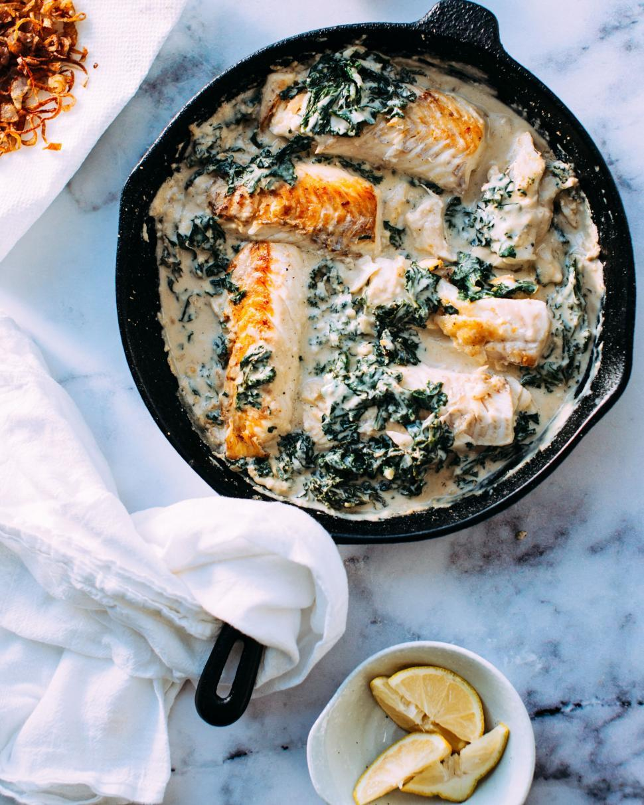

Creamy Salmon

Description
Indulge in the rich flavors of Creamy Tuscan Salmon, a mouthwatering dish featuring perfectly
seared salmon in a luscious garlic, sun-dried tomato, and spinach cream sauce. This easy-to-make recipe brings
the taste of Italy to your dinner table with every creamy, savory bite. Perfect for a weeknight dinner
or a special occasion!
Ingredients
- 4 salmon fillets (skinless or skin-on)
- 2 tablespoons olive oil
- Salt and pepper, to taste
- 3 cloves garlic, minced
- 1 tablespoon butter (for finishing)
- 1/2 cup sun-dried tomatoes, chopped or 1 cup cherry tomatoes, halved
- 1 cup heavy cream
- 1/2 cup chicken broth (or white wine/squeeze of lemon for extra depth)
- 1 cup spinach (fresh or frozen)
- 1/4 cup grated Parmesan cheese
- 1 teaspoon dried basil or parsley
- 1 teaspoon Italian seasoning (optional)
Steps
- Prepare the Salmon:
- Pat the salmon fillets dry with paper towels. Season both sides with salt and pepper.
- Sear the Salmon:
- Heat olive oil in a large skillet over medium-high heat. Once hot, add the salmon fillets, skin-side down (if using skin-on).
- Cook for about 4-5 minutes on each side, until golden and crispy. Remove the salmon from the skillet and set aside.
- Make the Creamy Sauce:
- In the same skillet, reduce heat to medium and add a little more olive oil if needed. Add the minced garlic and sauté for about 30 seconds until fragrant.
- Add the sun-dried tomatoes (or cherry tomatoes) and cook for 2-3 minutes, letting them soften.
- Add Liquids and Spinach:
- Pour in the heavy cream and chicken broth (or white wine), stirring to combine. Bring to a simmer and cook for 2-3 minutes, letting the sauce thicken slightly.
- Stir in the spinach and cook until wilted.
- Finish the Sauce:
- Add the grated Parmesan cheese, dried basil, and Italian seasoning. Stir until the cheese melts and the sauce becomes creamy.
- Taste and adjust seasoning with salt and pepper, if needed.
- Return Salmon to the Pan:
- Gently place the seared salmon fillets back into the skillet, spooning some sauce over the top. Let the salmon simmer in the sauce for another 2-3 minutes, until heated through.
- Serve:
- Drizzle the creamy sauce over the salmon fillets and garnish with fresh basil or extra Parmesan if desired. Serve immediately with a side of your choice—like pasta, rice, mashed potatoes, or roasted vegetables.
Enjoy!
Home